 Assistir
Assistir


67% Relevante 2008 2h01m HD . .
A12 Violência
Depois de se mudar para a casa do pai, Bella Swan começa a estudar na nova escola, onde conhece Edward, um rapaz misterioso que na verdade é um vampiro de 108 anos.
Elenco: Kristen Stewart, Robert Pattison, Billy Burke, mais
Gêneros: Dramas, Filmes de romance, Filmes baseados em livros
Cenas e momentos: Sinistros, Românticos, Suspense no ar

Gostou do Filme: Crespúsculov
Gostou do Filme: Crespúsculo
Sobre Crespúsculo
Elenco: Kristen Stewart, Robert Pattison, Billy Burke, mais
Gêneros: Dramas, Filmes de romance, Filmes baseados em livros
Cenas e momentos: Sinistros, Românticos, Suspense no ar
Classificação etária: A12 violência. Não recomendado para menores de 12 anos.